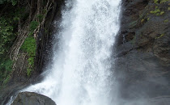

Wayanad
Wayanad is an Indian district in the north-east of Kerala state with administrative headquarters at the municipality of Kalpetta. It is set high on the Western Ghats with altitudes ranging from 700 to 2100 meters.[5] The district was formed on 1 November 1980 as the 12th district in Kerala by carving out areas from Kozhikode and Kannur districts. About 885.92 sq.km of area of the district is under forest.[6] Wayanad has three municipal towns—Kalpetta, Mananthavady and Sulthan Bathery. There are many indigenous tribals in this area.[7][8] In 2006 the Ministry of Panchayati Raj named Wayanad one of the country's 250 most backward districts out of a total of 640.[9]
Wayanad district is bordered by Karnataka to north and north-east, Tamil Nadu to south-east, Malappuram to south, Kozhikode to south-west and Kannur to north-west.[10] Pulpally in Wayanad boasts of the only Lava- Kusha temple in Kerala and Vythiri has the only mirror temple in Kerala which is a Jain temple. The edicts and caves of Ambukuthi Mala and another evidence state that the place is as old as the beginning of the New Age Civilisation.[11]
Top Destinations

Soochippara Waterfalls

Wayanad Wildlife Sanctuary